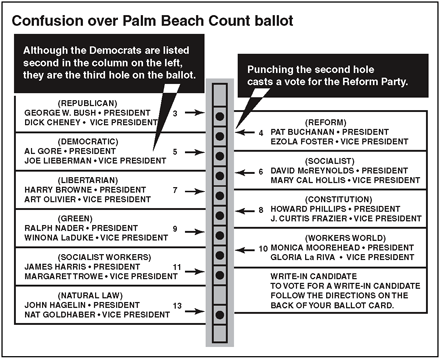
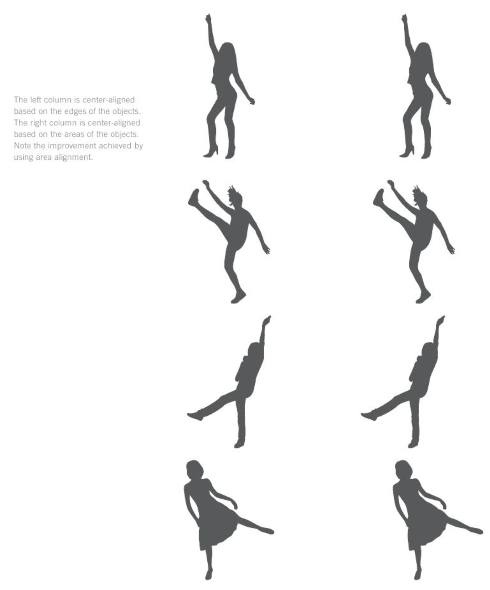
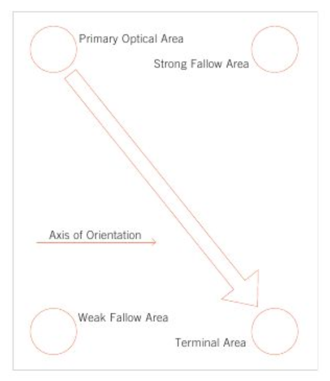
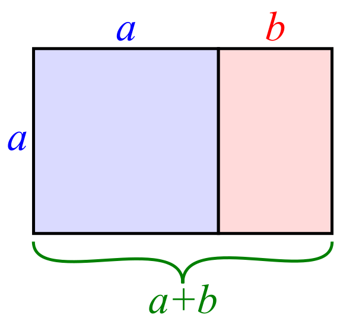
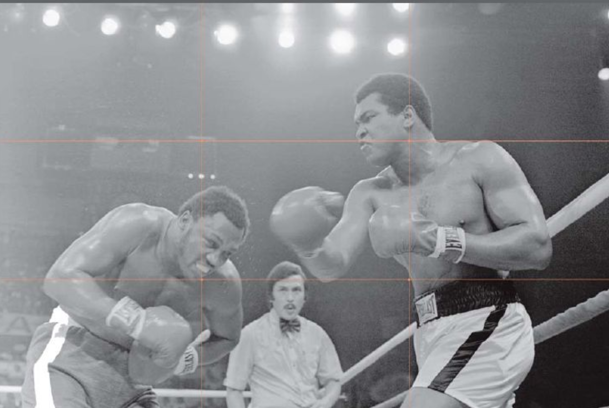
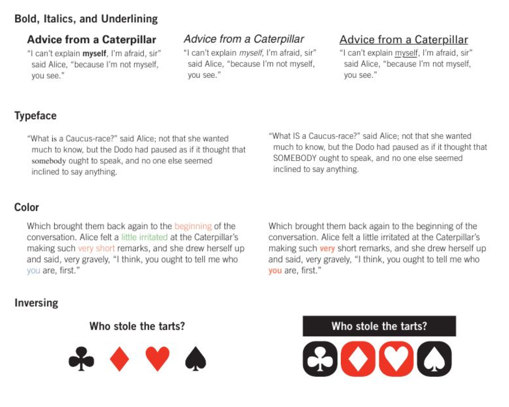
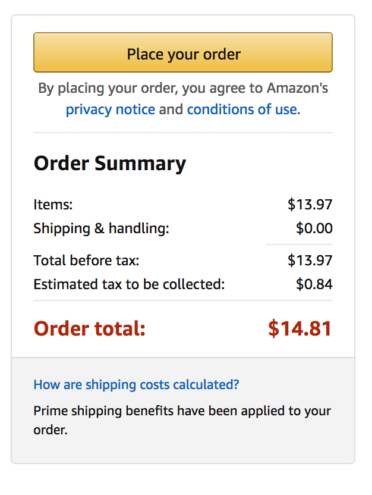
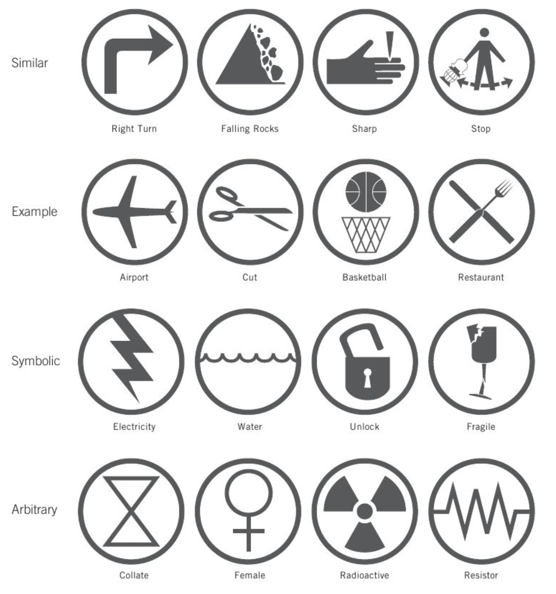
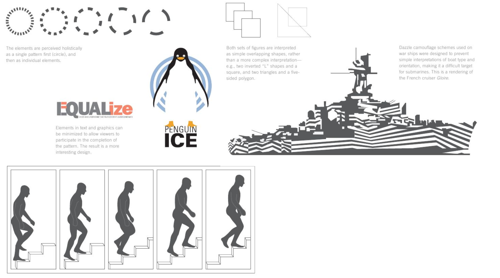

class: middle # Principles of Design <hr> Matthew J. Lavin Clinical Assistant Professor of English and Director of Digital Media Lab University of Pittsburgh February 2018 --- class: middle # Alignment <hr> - Eges should line up along common rows and columns - Bodies should align along a "common center"  Lidwell et. al, <em>Universal Principles of Design</em>. 2003. New York: Rockport, 2010. 24. --- class: middle # Area Alignment <hr> - Many things are aligned using the outer edge of a shape as the reference point to calculate it true center - When objects are nonuniform and assymetrical, this method doesn't look right - Position these objects so that equal "visual weight" hangs on either side of an imagined or real line Lidwell et. al, 30. --- class: middle  Lidwell et. al, 31. --- class: middle # The Gutenberg Diagram <hr> - A spatial pattern that describes where attention is drawn on a page or similar shape  - See also "the Z pattern" and "the F pattern" Lidwell et. al., 118 --- class: middle # The Golden Ratio <hr> - A spatial relationship of two objects where the ratio of the smaller to the larger is equal to the ratio of the larger object's size in relation to the size of both obejcts.  Lidwell et. al., 114 --- class: middle # Rule of Thirds <hr> - Many designs overtly or subtly arrange in relation to divisons of three - Also known as the golden grid rule  Lidwell et. al., 208 --- class: middle # Highlighting <hr> - Using techniques like boldness, typeface, color, and inversion to call attention to an object  Lidwell et. al., 126 --- class: middle # Framing <hr> - The manipulation of decision making and judgment by using "images, words, and context" to set the terms of the decision  Lidwell et. al., 108 --- class: middle # Priming <hr> - "The activation of specific concepts in memory for the purposes of influencing certain behaviors" Lidwell et. al., 186 --- class: middle # Iconic Representation <hr> - Pictorial images make "actions, objects, and concepts" in a display easier "to find, recognize, learn, and remember"  Lidwell et. al., 132 --- class: middle # The 80/20 Rule <hr> - Approximtaley 80 percent of the functionality of a system is governed by 20 percent of the variables in that system <img width="55%" src="80_20.png"> Lidwell et. al, 20. --- class: middle # Closure and the Law of Pragnanz <hr> - Closure: A tendency to perceive individual elements as a single, recognizable pattern or sequence - Law of Pragnanz: a tendency to interpret images as simple and complete rather than complex and incomplete --- class: middle  Lidwell et. al, 44., 144. --- class: middle # Other Interesting Principles <hr> - Top-Down Lighting Bias (240) - Five Hat Racks (100) - Horror Vaccui (128) - Expectation Effect (84) - Ockham's Razor (172) - Constraint (60) - Proximity (196) - Similarity (226) - Uncanny Valley (242)